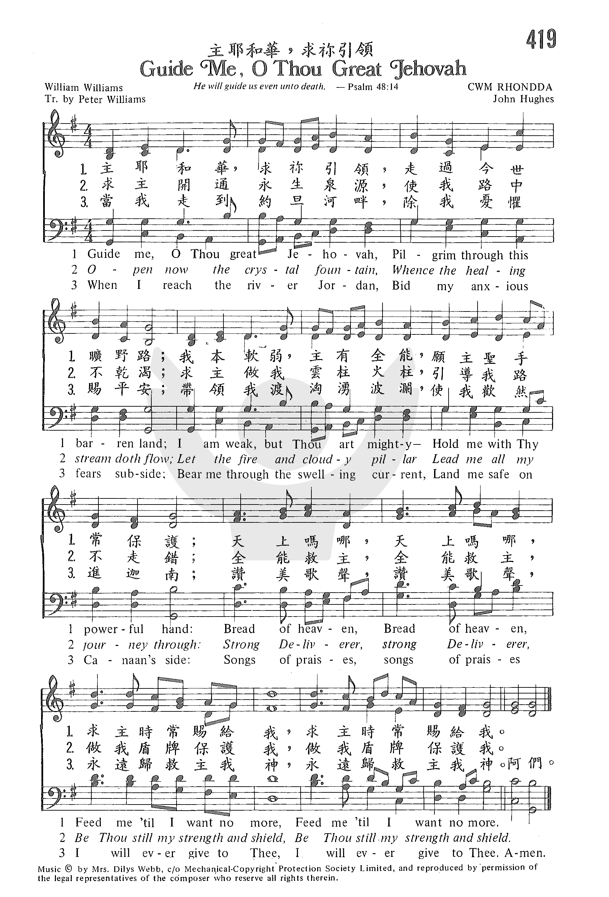

0043 Guide Me, O Thou Great Jehovah _William
Williams 主耶和华，求祢引领 (荒原行旅歌) CWM
RHONDDA ▲
|
|
生命聖詩 - 323 求神領我
(Guide Me, O Thou Great Jehovah) |
|
1 Guide me, O Thou great Jehovah,
pilgrim through this barren land;
I am weak, but Thou art mighty;
hold me with Thy powerful hand.
Bread of heaven, bread of heaven,
feed me till I want no more,
feed me till I want no more..
2 Open now the crystal fountain,
Whence the healing stream doth flow.
Let the fire and cloudy pillar
lead me all my journey thru.
Strong Deliverer, strong Deliverer,
Be Thou still my strength and shield,
Be Thou still my strength and shield.
3 When I reach the river Jordan,
Bid my anxious fears subside;
Bear me thru the swelling current,
land me safe on Canaan's side.
Songs of praises, songs of praises
I will ever give to Thee,
I will ever give to Thee.
|
耶和華，求你帶領我，走過今世曠野路；
我雖軟弱主有權能，願主聖手常扶助；
天上嗎哪，天上嗎哪，賜我飽足免飢餓，
賜我飽足免飢餓。
求主開通永生泉源，解我乾渴醫我傷；
求主賜下雲柱火柱，使我道路得通暢。
全能救主，全能救主，作我盾牌與力量，
作我盾牌與力量。
當我來到死亡河邊，求主使我不恐懼；
領我安度洶湧波濤，進入天家得安居。
歌唱讚美，歌唱讚美，我要永遠讚美你，
我要永遠讚美你。
|
https://www.zanmeishi.com/songbook/hymns-for-gods-people.html
https://www.zanmeishige.com/tab/25994.html?songbook=1&index=419

 |
| |
|
http://www.hymncompanions.org/Feb/11/stream.php
主耶和華，求祢引領，走過今世曠野路；
我本軟弱，主有全能，願主聖手常保護；
天上嗎哪，天上嗎哪，
求主時常賜給我，求主時常賜給我。
求主開通永生泉源，使我路中不乾渴；
求主做我雲柱火柱，引導我路不走錯；
全能救主，全能救主，
做我盾牌保護我，做我盾牌保護我。
當我走到約旦河畔，除我憂懼賜平安；
帶領我渡洶湧波瀾，使我歡然進迦南；
讚美歌聲，讚美歌聲，
永遠歸救主我神，永遠歸救主我神。
 (請點耳機收聽)
(請點耳機收聽)
基督徒的一生必需靠神引領，才能走過荒漠、經過洪濤，抵達榮美福地。
威爾斯人，素被公認是世上最愛歌唱的民族，迄今仍定期舉行歌唱慶典。
工人們常邊走邊唱到礦場去工作；牧師講道時，有時也被會眾的歌聲打斷，但傳道人不以為忤，因為聖靈常藉歌唱使人悔改。
十八世紀初葉，一位年輕的傳道人海理士（Howell Harris）藉詩歌佈道，掀起了威爾斯大復興。 本詩的作者魏理斯（William Williams,
1717-1791）是富農之子，原擬從醫，卻在海理士的佈道會上決志奉獻。 最初他是聖公會牧師，但因強調佈道而不容於聖公會。

魏理斯任衛理公會巡迴宣教士有四十三年之久，步行或騎馬逾十萬英哩，飽受風霜雨雪的侵襲。所經之地，多數是峽谷溪澗，陡坡峭壁，使他緬想到當年以色列人在曠野飄泊的情景，也正是基督徒地上生活的寫照。他寫這首詩時，年僅廿七歲，詩名是「荒原行旅歌」（Strength
to Pass Through the Wilderness）。 原詩是五節六行詩，譯成英文時，選用第一、三、五節，後又加上第四節，但多數聖詩集祇採用三節。
他和妻子都有歌唱的恩賜，被稱為「威爾斯甜美的歌唱家」。魏理斯用威爾斯文作了約八百首聖詩，但僅此詩被譯成七十五種語文。這首詩有好幾個曲調，最常用的是威爾斯名作曲家休斯（John
Hughes, 1873-1932）的譜。這是一個壯麗的威爾斯曲調，曲名是CWM Rhondda，意思是「朗達小溪谷」。

休斯十二歲時曾在朗達的煤礦當看門小童，而煤礦旁有大小兩個溪谷。 這首曲是為1905年浸信會在朗達舉行歌唱年會所作，威爾斯運動會開幕時，也常唱此詩。
休斯另作許多主日學進行曲及聖詩。
另外二個常用的曲調是海斯汀（Thomas Hastings, 1784-1872）的「錫安曲」（Zion）和范納（W. L.
Viner,1790-1867）的「散會曲」（Dismissal）。
中英文聖詩集參考
英文歌名 Guide
Me, O Thou Great Jehovah
頌主新歌 488、489
頌主新歌(中英雙語) 502
教會聖詩 419
生命聖詩 323
新聖詩 172
歡欣讚美 682
聖徒詩集 474
聖詩 190
台語聖詩 297
讚美 298
恩頌聖歌 395
青年聖歌I 89
校園詩歌I 19
註：「歡欣讚美」詩集為英文版，原名是
Celebration Hymnal．
https://ia.tjc.org/elibrary/ContentDetail.aspx?ItemID=12904&langid=2
讚美詩源考小組策劃歐婉貞撰稿
作詞者：William Williams (1717-1791) ＆ Peter Williams (1722-1796)
作曲者：Jean-Jacques. Rousseau (1712-1778)
曲調名：GREENVILLE，8.7.8.7.D
第一節譜例：慈悲救主！求你領我。走過今世曠野路。
Guide me, O Thou great Jehovah,Pilgrim through this barren land;
本詩歌詞由威廉‧威廉斯以威爾斯語撰寫，並由彼得‧威廉斯翻譯成英文。
原作者威廉‧威廉斯（William Williams,
1717-1791）出生於英國的威爾斯地區，是富農之子。他信奉聖公會並擔任聖職人員，但因強調佈道的主張不合於聖公會主流，因此始終未被正式任命為牧師。
威廉斯巡迴宣教的生涯達三、四十年之久，路程逾十萬英哩，飽受風霜雨雪的侵襲。所經之地，多數是峽谷溪澗，陡坡峭壁，使他想到當年以色列人在曠野飄泊的情景，也正是基督徒地上生活的寫照。因此本詩原名是「荒原行旅歌」（Strength
to Pass Through the
Wilderness），呈現了他宣教生涯的所思所感。威廉斯因有歌唱的恩賜，被當代稱為「威爾斯甜美的歌唱家」。
威廉斯用威爾斯文作了約八百首聖詩，但僅此詩就被譯成七十五種語文。
將該詩翻譯為英文的彼得‧威廉斯，1744年被任命為牧師，但在隔年便因為宗教理念的因素離開英國國教。到了1791年，他因被視為異端而遭到驅逐。但在同一時期，他也在威爾斯地區的喀麥登建立了非英國國教體系的教會。他的貢獻包括威爾斯語聖詩的創作、威爾斯語聖經的編訂、並且將本詩的威爾斯語歌詞翻譯為英文。本詩原文是五節六行詩，譯成英文時，選用第一、三、五節，後又加上第四節，但多數聖詩集只採用三節。
這首詩曾搭配好幾首不同的曲調，大部分聖詩集採用John Hughes的曲，本會讚美詩則採用盧梭（J.J. Rousseau）的曲調。
盧梭是18世紀著名的法國啟蒙運動思想家、哲學家、教育學家、文學家，同時也相當具有音樂才華。他所創作的此曲原名為Greenville，是一首小夜曲（Days
of absence, sad and dreary），出自他寫於1752年的歌劇作品《鄉村的占卜師》（Le Devin du
Village）。之後的幾年，這首歌被譽為「盧梭的夢境」，因傳言是盧梭在夢中看到他置身天堂裡，聽到天使在真神寶座前吟唱，此即為天使之歌。
盧梭雖然不信仰基督，他所寫的這首曲子卻超乎他的意料和預期，因為基督教會利用這個旋律、配上敬虔的歌詞，教化了許多基督徒的心靈。大家都認為，盧梭正如《聖經》上的巴蘭先知，雖然敵對基督教，卻寫出了一首神聖的旋律。
註：曲調名──GREENVILLE，是個地名，出自盧梭歌劇中的芭蕾舞小夜曲片段。1825年由Thomas
Walker（1790-1875）出版的《Companion to Dr. Rippons
Tune-book》（李彭博士曲調手冊）中，將此旋律命名為GREENVILLE。 |
|
http://www.xueshengshi.com/?p=3281
简介（一） （来源：《岁首到年终》）
William Williams, 1717-1791
神永永远远为我们的神。祂必作我们引路的，直到死时。(诗48：14)
当摩西带领以色列百姓度过四十年在旷野飘流的生活，来到迦南边境时，他向百姓重申耶和华诫命，警戒与勉励百姓。其中吩咐以色列民要记念神的引导。
记念神的引导，是每一个属神的儿女们所必须的，因为这样能够帮助我们谨守神的吩咐，使我们得蒙神所赐的福祉。摩西告诉百姓要从下列各方面去记念神的引导：记念神的苦炼，思想神的管教，称颂神的赐予，不要忘记神的恩惠，不要忘记祂是祢独一倚靠的主。(参：申：8：2-20)[dropdown_box expand_text=”全文” show_more=”显示” show_less=”隐藏”
start=”hide”]多少世纪以来，威尔斯人被公认为世界上最热衷于歌唱的族群。定期在Llangollen
举办，歌唱节庆，至今仍沿习该风俗。这首诗歌就是在这种节庆所诞生的佳作。
十八世纪初，一位叫Howell Harris 的年轻威尔斯传道人，借着福音布道及会众唱诗，点燃了威尔斯复兴之火。本诗作者William
Williams，原准备以行医为业，却在福音布道中受感决志并献身传道。
他写了近八百首之圣诗，完全用威尔斯文，可惜，除了这首「主耶和华，求祢引领」外，都未翻译成其它语言。
此首圣诗最早出现于1745年由Williams 所印行的诗集中。
其内容乃取材自圣经中，以色列旷野飘流记，也是现今基督徒奔跑天路历程的写照。
1 主耶和华，求你引领，走过今世旷野路；
我本软弱，主有全能，愿主圣手常保护；
天上吗哪，天上吗哪，求主时常赐给我。
2 求主开通永生泉源，使我路中不干渴；
求主做我云柱火柱，引导我路不走错；
全能救主，全能救主，做我盾牌保护我。
3 当我走到约旦河畔，除我忧惧赐平安；
带领我渡汹涌波澜，使我欢然进迦南；
赞美歌声，赞美歌声，永远归救主我神。
＊主是引导你的……等候祂总是有益；切不可急忙，也不可自行其是。祂顾念我们，在一切事上都有引领。── 约翰达秘
https://www.haomuren.net/devtoday/devs/2%E6%9C%8811%E6%97%A5%E6%9C%89%E8%81%B2%E9%9D%88%E4%BF%AE/
http://www.congsing.org/guide_me.html
A Prayer for Strength to Go through the Wilderness of the World
William Williams, 1745; trans. by Peter Williams and the author, 1771-72
Addressed to God
|
Guide me, O thou great Jehovah, |
Deut. 32:10-12; Is. 58:11 |
|
pilgrim through this barren land; |
Deut. 8:15; Heb. 11:13-16 |
|
I am weak, but thou art mighty; |
2 Cor. 12:9-10 |
|
hold me with thy pow’rful hand; |
Ps. 73:23-24; 139:10; Is. 41:13 |
|
Bread of heaven, |
Ex. 16; John 6:51 |
|
feed me till I want no more. |
Matt. 5:6; John 6:35 |
|
|
|
|
Open now the crystal fountain, |
Ex. 17:6; Is. 48:21; 1 Cor. 10:4 |
|
whence the healing stream doth flow; |
Ezek. 47:12; Rev. 22:2 |
|
let the fire and cloudy pillar |
Ex. 13:21; 40:38 |
|
lead me all my journey through; |
Ps. 48:14 |
|
strong Deliv’rer, |
2 Sam. 22:2; Ps. 18:2, 144:2 |
|
be thou still my strength and shield. |
Ps. 28:7 |
|
|
|
|
When I tread the verge of Jordan, |
Josh. 3 |
|
bid my anxious fears subside; |
Ps. 23:4; 34:4; Phil. 1:20; Heb. 2:14-15 |
|
Death of death, and hell’s Destruction, |
1 Cor. 15:54; Rev. 2:11; Rev. 20:14 |
|
land me safe on Canaan’s side; |
2 Tim. 4:18 |
|
songs of praises |
Ps. 95:2 |
|
I will ever give to thee. |
Ps. 89:1; Rev. 5:13 |
Anyone reading the
books of Exodus, Numbers, and Joshua (as opposed to slowly studying them) will
soon discover that this story—of the liberation, pilgrimage, and arrival of
God’s covenant people—seems to be both a historic account of God’s mercy and
an archetype for the Christian life. Certainly it must have seemed so to
William Williams, the Welsh preacher who wrote the hymn above. Drawing on
imagery from the Exodus that reappears later in Scripture to find fuller
significance, Williams shows us first the Christian’s pilgrimage through the
wilderness of this world and then the crossing into the heavenly promised
land. In doing so, he arrives at a hymn not only rich in biblical language,
but one whose entire conceit is scriptural—the Exodus from Egypt and the
sojourn in the wilderness really do correspond to our conversion and earthly
sanctification. The crossing into Jordan really does correspond to our bodily
death and entrance into God’s rest. The third chapter of Hebrews gives us
plenty enough license to see the correspondence if our own imagination weren’t
enough.
The hymn’s first two lines make many references to the Hebrew exodus. God is
here described as Jehovah—the covenant Lord of God’s people. The singer is
identified as a pilgrim—one who makes a journey at God’s prompting. The land
is “barren.” And Jehovah is a “guide.” But all these are oblique references.
The concrete one comes in the fifth line where God is now called “Bread of
heaven.”
A delightful double intention is created in the last line of this stanza
by the transitive and intransitive use of “want” and the way “no more” can
also mean “no longer.” When Christ feeds us (1) we desire nothing more, and
(2) we will never again be lacking.
In stanza 3 we, like Bunyan’s Christian and Hopeful, discover that one
last obstacle stands in our way. “Now I further saw, that betwixt them and the
gate was a river; but there was no bridge to go over, and the river was very
deep. At the sight, therefore, of this river the pilgrims were much stunned;
but the
men
that went with them said, ‘You must go through, or you cannot come at the
gate.’” In “Guide Me, O Thou Great Jehovah,” we pray that God would replace
our fear of death with faith. The third line of the last stanza is a little
tricky to follow until we realize that God is actually being here named. He
himself is the Death of death and the Destruction of hell. The two things we
feared the most are overcome for us by God himself.
The poem’s unfailing trochees and
its small parcelled phrases make its sound and sense lively. This suits it
well to John Hughes’s tune CWM
RHONDDA (that is, “the valley of Rhondda,” the Welsh coal-mining region
where this tune was first sung in 1905). The first four lines of text are set
to two parallel periods (note that we sing “Guide me, O thou great Jehovah” to
the same music as “I am weak, but thou art mighty”). We sing the melody of
lines 3-4 as both an answer to and a development of the melody of lines 1-2.
Since CWM
RHONDDA requires that the words of line 5 and the words of line 6 be
sung twice, it’s helpful that the melody mimics itself at both points: measure
10 is the same as measure 9 but higher, and measures 13-14 follow the
descending scale of measures 11-12 with only a little ornament added. The
repetition in line 5 builds toward the climactic leap in line 6. The dominant
chord at “shield”(st. 2) and “thee” (st. 3) is powerful and prolonged. Thus
the music and the poem work together to communicate the pilgrim’s resolve not
to lose sight of his Guide.
Notes
Scripture References:
st. 1 = Ps. 48:14, Ps. 73:23-24, John 6:31-35, Ex. 16:4
st. 2 = Ex. 13:21-22, Ps. 28:7
The great circuit-riding
preacher/poet William Williams (b. Cefn-y-Coed, Carmarthenshire, Wales,
1717; d. Pantycelyn, Carmarthenshire, 1791) wrote the original Welsh text "Arglwydd,
arwain trwy'r anialwch"–"Lord, Lead Me Through the Wilderness." It was
published in his Alleluia (1745) and in his Caniadau (1762)
with the title, "A prayer for strength to go through the wilderness of the
world." Translated into some seventy-five languages, Williams's text has
become universally popular in Christendom (and with the tune CWM RHONDDA, a
favorite at Welsh rugby matches).
The English translation by
Peter Williams (b. Llansadurnin, Carmarthanshire, Wales, 1722; d.
Llandyfeilog, Wales, 1796), which began "Guide me, O thou great Jehovah,"
was published in his Hymns on Various Subjects (1771). That
first stanza is still in use, but the remaining stanzas come from William
Williams's own translation, which he prepared for The Collection of
Hymns Sung in the Countess of Huntingdon’s Chapels (1771).
Pilgrimage is a much-used
metaphor in Williams's texts. "Guide Me, O My Great Redeemer" draws on
images from the Exodus story in the Old Testament: "bread of heaven" (Ex.
16), "crystal fountain" (Ex. 17), "fire and cloudy pillar" (Ex. 13:21-22).
But the New Testament, Christocentric focus of the text is equally clear in
the repeated final line of each stanza: Jesus is the "bread of heaven" (or
"bread of life," (John 6), the "rock" who is our "strength and shield" (1
Cor. 10:4), and the victor over "death … and hell's destruction" (Rev.
1:18). Thus the change from the original “Jehovah” of the first line to
"Redeemer" makes eminent sense.
William Williams and Peter
Williams were contemporaries with a similar background. William Williams is
usually considered to be the greatest Welsh hymn writer of the eighteenth
century. He had begun to prepare himself for a medical profession, but the
course of his life was altered when he was influenced by the ministry of
Howell Harris, an evangelist associated with George Whitefield. Williams
began to study for the ministry and in 1740 was ordained a deacon in the
Church of England. After being refused ordination as a priest because of his
evangelical beliefs, he joined the Calvinist Methodists in 1744. He became
an itinerant evangelist and for the next forty-five years served as a
leading figure in the revival movement in Wales. Williams's evangelistic
preaching was greatly aided by his hymns, which were sung with great
enthusiasm at revival and "society" meetings. Known as the "sweet singer of
Wales," he wrote about eight hundred hymn texts in Welsh and over one
hundred in English. They were published in Alleluia (1744), Hosanna
I Fab Dafydd (1754), Hosanna to the Son of David (1759), Y
Moro Wydr (1762), and Gloria in Excelsis (1771).
Peter Williams was
converted to Christianity by the preaching of George Whitefield and was
ordained in the Church of England in 1744. His evangelical convictions soon
made him suspect, however, and he left the state church to join the
Calvinist Methodists in 1746. He served as an itinerant preacher for many
years and was a primary figure in the Welsh revival of the eighteenth
century. After being expelled by the Methodists in 1791 on a charge of
heresy, he ministered in his own chapel during the last years of his life.
He published the first Welsh Bible commentary (1767-1770) and a Bible
concordance (1773); he was also one of the annotators for John Canne's Welsh
Bible (1790). In addition Williams published a Welsh hymnal, Rhai
Hymnau ac Odlau Ysbrydol (1759), as well as Hymns on Various
Subjects (1771).
Liturgical Use:
As a hymn of pilgrimage and prayer for divine providence; for various
services and occasions on the Christian journey, including Old/New Year and
the Easter season (given its Exodus theme).
Text:
The original text of this hymn was written in Welsh by William Williams, a
circuit-riding preacher, in 1745, and given the original title, “A prayer for
strength to go through the wilderness of the world.” It has since been
translated in seventy-five languages. It was translated into English by Peter
Williams (no relation) in 1771. Most modern hymnals now use the first verse of
Peter’s translation, and the last two from William’s own translation into
English.
William often used the metaphor of “pilgrimage” in his hymn texts, and this is
no exception. The general theme of the song is an allusion to the Israelites’
journey through the desert to reach the Promised Land. There are a few textual
differences between versions. The editors of the Psalter Hymnal changed
the name of God in the first line from “Jehovah” to “Redeemer,” to reflect the
change in modern scholarship that does not accept “Jehovah” as a credible name
for God, since it stems from a mistaken medieval interpretation of the Hebrew
names “YHWH” and “Adonai.” Another difference is found in the last two lines of
each verse, where different words are used to construe the same sentiment. For
example, some hymnals, such as the Psalter Hymnal, read, “Feed me now and
evermore,” while most others read, “Feed me till I want no more.”
Tune:
CWM RHONDDA was composed in 1905 by John Hughes. Austin Lovelace writes that its
87.87.87 meter invites “enthusiastic participation” (Anatomy of Hymnody,
74). It should indeed be sung in a stately manner, but, as Jerry Jenkins writes,
though this hymn was meant to “be sung at full power in a corporate setting…it
can also be whispered reverently for profound personal impact” (Hymns for
Personal Devotions, 52). Though the meter invites robust singing, the words
also invite prayer. Make sure that the tune doesn’t become choppy and blunt, but
that you glide through the melody, allowing the words to be expressive. Jeremy
Casella, a singer-songwriter from the Indelible Grace community, has a new tune
for Williams’ text that underscores the prayer within the text.
Alternative Harmonization for Organ:
Alternative Harmonization for Piano:
When/Why/How:
This hymn of pilgrimage can be sung at various times during the year as a prayer
for divine guidance and providence. Some examples of services where this hymn
might fit are New Year’s Eve, Commissioning services, or the Easter season
(given the Exodus theme). It could function as a prayer of invocation or a hymn
of response after a sermon on God’s guidance in our lives. It would also be a
beautiful hymn for communion, especially given the repeated line, "Bread of
Heaven." In the same vein, it could work as an ending for a service - now that
we've been fed with spiritual food, we ask that God would guide us as we go out
from this place.
For a contemporary worship service you may want to use the choral anthem Step
By Step with Guide Me, O Thou Great Jehovah.
Laura de Jong,
Notes
The popularity of
Williams's text ("Guide me, O thou great Jehovah") is undoubtedly aided by
its association with CWM RHONDDA, composed in 1905 by John Hughes (b.
Dowlais, Glamorganshire, Wales, 1873; d. Llantwit Fardre, Wales, 1932)
during a church service for a Baptist Cymanfa Ganu (song
festival) in Capel Rhondda, Pontypridd, Wales. Hughes received little formal
education; at age twelve he was already working as a doorboy at a local
mining company in Llantwit Fardre. He eventually became an official in the
traffic department of the Great Western Railway. Much of his energy was
devoted to the Salem Baptist Church in Pontypridd, where he served as both
deacon and precentor. Hughes composed two anthems, a number of Sunday school
marches, and a few hymn tunes, of which CWM RHONDDA is universally known.
At first widely
disseminated in leaflet form, CWM RHONDDA gradually was adopted into various
hymnals. The tune is named after the valley of the Rhondda River, a coal
mining area in Wales. Though composed with simple melodic means, CWM RHONDDA
is a vigorous melody in major tonality (contrary to the popular belief that
most Welsh tunes are minor). Sing in harmony. The altos and basses may wish
to sing the little notes on the last line as they repeat the words
"evermore," "strength and shield," and "sing to you." Accompany in a
forceful, confident manner.
--Psalter Hymnal
Handbook
https://hymnary.org/tune/zion_hastings


https://www.umcdiscipleship.org/resources/history-of-hymns-guide-me-o-thou-great-jehovah
"Guide Me, O Thou Great Jehovah"
by William Williams;
trans. by Peter Williams.
The United Methodist Hymnal, No. 127

 |
|
William Williams |
Guide me, O thou great Jehovah,
pilgrim through this barren land.
I am weak, but thou art mighty;
Hold me with thy powerful hand.
Bread of heaven, bread of heaven,
Feed me till I want no more.
“Guide me, O thou Great Jehovah” has been used for worship in congregations
around the globe and across denominational lines. It was also incorporated in
two of the most televised services of the last two decades, the funeral of
Princess Diana of Wales (1997) and the royal wedding of Prince William and
Catherine Middleton (2011). Why would this hymn be used for such significant
occasions? Why has this hymn stood the test of time in so many worshiping
communities?
The author of this widely popular hymn is William Williams (1717-1791), born
in Carmarthenshire, Wales, to John and Dorothy Williams. According to Welsh
hymn scholar Alan Luff, Williams grew up as an Independent and later a
Calvinist, but had no aspirations to be a minister. In fact, he intended to be
a doctor, attending school at the Dissenting Academy of LLwyn-llwyd, near
Talgarth, Wales. It was near Talgarth that he first encountered the preaching
of Howell Harris, which lead to his conversion experience. Shortly after, he
abandoned his Independent upbringing and desire to be a doctor to pursue
ordination in the Established Church.
In 1744, after being accused of several misdemeanors against the Church of
England, Williams devoted himself to Methodism. The Welsh text was written
soon after this in 1745. While it is still a mystery as to how or why Williams
began composing hymn-texts in his native tongue, United
Methodist Hymnal editor Dr. Carlton Young states that he became known as
the most famous hymn writer of Welsh Methodism. Traces of the hardship
Williams experienced as a traveling minister can be found throughout “Guide
Me, O Thou Great Jehovah.”
Williams beautifully interweaves imagery from the Old Testament book of Exodus
to evoke a sense of God’s guidance through strife. One of the reasons this
hymn has influenced such a broad array of congregants is the universal subject
of struggle. Every Christian, and indeed everyone, encounters difficulties.
“Guide Me, O Thou Great Jehovah” affirms the reality that God provides for us
and redeems all wrong in the world. This God who provided for the Hebrew
people wandering amidst “barren lands” with “Bread of Heaven” is still and
ever will be a God of provisional grace.
Open now the crystal fountain,
Whence the healing stream doth flow;
Let the fire and cloudy pillar
Lead me all my journey through.
Strong Deliverer, strong Deliverer,
Be Thou still my Strength and Shield.
In this stanza, Williams makes a reference to Exodus 13:21 – the “fire and
cloudy pillar” that the Israelites followed by night and by day respectively.
There is also a reference to a “crystal fountain” from “whence the healing
stream doth flow.” This alludes to the water flowing from the rock for the
Hebrew people in Exodus 17:6. These rich biblical references maintain the idea
of a provisional God. In this text, we now encounter a God who provides
sustenance for the hungry, guides his followers by day and by night, and
quenches the thirst of those longing for water.
When I go through Jordan -
Cruel death in its force -
Thou Thyself suffered this before,
Why shall I fear further?
Victory!
Let me cry out in the torrent. (Literal translation from the Welsh)
The hymn ends in climactic fashion with the Hebrew people finally reaching
their destination after forty years of wandering in the desert (Joshua
3:9-6:17). This stanza references the book of Joshua with the crossing of the
river “Jordan” and the arrival at Canaan. The final lines conclude with
exuberance, as the “people of Israel” sing of victory to their Redeemer and
Provider.
While most modern hymnals are in agreement with the bulk of the hymn text,
there are a few differences from hymnal to hymnal. In some hymnals, such as The
United Methodist Hymnal (1989), the first line of stanza one reads “Guide
me, O thou great Jehovah,” while in others, including Evangelical
Lutheran Worship (2006), the first line is “Guide me ever, great
Redeemer.” As Welsh Anglican minister Sandy Grant writes, many people believe
the word “Jehovah” is a mistranslation for the personal name for God, Yahweh (YHWH),
revealed to Moses at the burning bush in Exodus 3:13-15. To avoid confusion,
the word “Redeemer” is substituted to rightfully depict the God who led the
Israelites out of bondage.
The hymn, originally written as six, six-line stanzas in Welsh, was published
in 1762 in Williams’ collection of hymns entitled Caniadau
y rhai sydd ar y Mor o Wydr (Songs
of those upon the Sea of Glass). In 1771, Peter Williams (1722-1796), no
relation to William Williams, translated the first, third, and fifth stanzas
into English. The following year William Williams, or his son John,
retranslated the third and fourth and added a new English stanza that
incorporated Christ. Most modern-day hymnals include just the three stanzas
originally translated by Peter Williams.
While, for Christians, it is vastly important to recognize Christ, the fourth
stanza written by the original author draws away from the overall subject of
God the Father as Provider/Redeemer. Thus, it is almost always excluded. The
hymn is most commonly paired with the Welsh tune CWM
RHONDDA (1907) composed by John Hughes (1873-1932), requiring repetition
of the final line of text in the English translation. The original Welsh text
has often been paired with the mid-nineteenth century tune CAPEL
Y DDÔL.
“Guide Me, O Thou Great Jehovah” has brought, and will continue to bring,
comfort to thousands upon thousands of Christians with its exquisite reminder
of a God who provides for those in need.
uest writer Gabriel Edwards is a Master of Sacred Music student at Perkins
School of Theology, Southern Methodist University, who studies hymnology with
Dr. C. Michael Hawn.
C. Michael Hawn is University Distinguished Professor of Church Music, Perkins
School of Theology, SMU.
https://www.challies.com/articles/hymn-stories-guide-me-o-thou-great-jehovah/
Guide me, O thou great
Jehovah,
Pilgrim through this barren land;
I am weak, but thou art mighty;
Hold me with thy powerful hand:
Bread of heaven,
Feed me till I want no more.
Open now the crystal
fountain
Whence the healing stream doth flow;
Let the fire and cloudy pillar
Lead me all my journey through:
Strong deliverer,
Be thou still my strength and shield.
When I tread the verge of
Jordan,
Bid my anxious fears subside;
Death of deaths, and hell’s destruction,
Land me safe on Canaan’s side:
Songs of praises,
I will ever give to thee.
Two stanzas have since been added.
One appears to have been added by Williams when he translated it to English
(“Musing on my habitation…”). I am not sure about the other.
Lord, I trust Thy mighty
power,
Wondrous are Thy works of old;
Thou deliver’st Thine from thralldom,
Who for naught themselves had sold:
Thou didst conquer, Thou didst conquer,
Sin, and Satan and the grave,
Sin, and Satan and the grave.
Musing on my habitation,
Musing on my heav’nly home,
Fills my soul with holy longings:
Come, my Jesus, quickly come;
Vanity is all I see;
Lord, I long to be with Thee!
Lord, I long to be with Thee!
The hymn is especially powerful when sung by a choir and has been recorded many
times. Here is a good
example.
You can see a lot of really bored-looking people singing it at the royal wedding
of Prince
William. Several people have rewritten the melody but, between you and me, I
don’t think any of them touch the power and beauty of the original. Having said
that, Whitney Houston’s way-too-short
rendition sounds like it would have been special, though it also would have
been about 20 minutes long.
https://en.wikipedia.org/wiki/Cwm_Rhondda
From Wikipedia, the free encyclopedia
Jump to navigationJump
to search
Cwm Rhondda, taken from the Welsh name
for the Rhondda
Valley, is a popular hymn
tune written by John
Hughes (1873–1932) in 1907.
It is usually used in English as
a setting for William
Williams' text Guide Me, O Thou Great Redeemer (or, in
some traditions, Guide Me, O Thou Great Jehovah),[1] originally Arglwydd,
arwain trwy’r anialwch ("Lord, lead me through the wilderness") in Welsh.
The tune and hymn are often called Bread of Heaven because
of a repeated line in this English translation.
In Welsh the tune is most commonly used as a
setting for a hymn by Ann
Griffiths, Wele'n sefyll
rhwng y myrtwydd ("Lo, between the myrtles standing").

Capel Rhondda, Hopkinstown
John Hughes wrote the first version of the
tune, which he called "Rhondda", for the Cymanfa
Ganu (hymn festival) in Pontypridd in
1905, when the enthusiasm of the 1904–1905
Welsh Revival still remained.[2] The
present form was developed for the inauguration of the organ at Capel
Rhondda, in Hopkinstown in
the Rhondda Valley, in 1907.[3] Hughes
himself played the organ at this performance, using the English
translation of William Williams' words perhaps because of the large number
of English-speaking industrial workers who had migrated to the area.[citation
needed] The name was changed from "Rhondda" to "Cwm
Rhondda" by Harry
Evans, of Dowlais,
to avoid confusion with another tune, by M O Jones.
Tradititional version, sung by Cymanfa Treforus
The hymn is usually pitched in A-flat
major and has the 8.7.8.7.4.7 measure which
is common in Welsh hymns. The third line repeats the first and the fourth
line develops the second. The fifth line normally involves a repeat of the
four-syllable text and the sixth reaches a climax on a dominant
seventh chord (bar 12) – emphasised by a rising arpeggio in
the alto and bass parts. The final line continues the musical development
of the second and fourth (and generally carries a repeat of the text of
the sixth). On account of these vigorous characteristics, the tune was
resisted for some time in both Welsh and English collections but has long
been firmly established.[4]
Hymn text: 'Guide me, O Thou great Redeemer'[edit]
Present-day[edit]
The following are the English and Welsh
versions of the hymn, as given in the standard modern collections.
Guide me, O thou great Redeemer,
Pilgrim through this barren land;
I am weak, but thou art mighty;
Hold me with thy powerful hand:
Bread of heaven, bread of heaven
Feed me till I want no more.
Feed me till I want no more.
Open thou the crystal fountain
Whence the healing stream shall flow;
Let the fiery, cloudy pillar
Lead me all my journey through:
Strong deliverer, strong deliverer
Be thou still my strength and shield.
Be thou still my strength and shield.
When I tread the verge of Jordan,
Bid my anxious fears subside;
Death of death, and hell's destruction,
Land me safe on Canaan's side:
Songs of praises, songs of praises
I will ever give to thee.
I will ever give to thee.
Arglwydd, arwain trwy'r anialwch,
Fi, bererin gwael ei wedd,
Nad oes ynof nerth na bywyd
Fel yn gorwedd yn y bedd:
Hollalluog, Hollalluog,
Ydyw'r Un a'm cwyd i'r lan.
Ydyw'r Un a'm cwyd i'r lan
Agor y ffynhonnau melus
'N tarddu i maes o'r Graig y sydd;
Colofn dân rho'r nos i'm harwain,
A rho golofn niwl y dydd;
Rho i mi fanna, Rho i mi fanna,
Fel na bwyf yn llwfwrhau.
Fel na bwyf yn llwfwrhau.
Pan yn troedio glan Iorddonen,
Par i'm hofnau suddo i gyd;
Dwg fi drwy y tonnau geirwon
Draw i Ganaan – gartref clyd:
Mawl diderfyn. Mawl diderfyn
Fydd i'th enw byth am hyn.
Fydd i'th enw byth am hyn.
|
Lord, lead me through the wilderness,
Me, a pilgrim of poor appearance,
I don't have strength or life in me,
Like lying in the grave:
Omnipotent, Omnipotent
Is the one who brings me to the shore.
Is the one who brings me to the shore.
Open the sweet fountains
Flowing from the Rock that is;
Give a column of fire to lead me at night,
And give a column of fog during the day.
Give me manna. Give me manna,
So that I shall not falter.
So that I shall not falter.
When I walk the bank of the Jordan,
Cause all my fears to sink;
Take me through the roughest waves
Over to Canaan, a cosy home:
Unending praise. Unending praise
Will be to Your name for this.
Will be to Your name for this.
|
The Welsh version shown above is a somewhat
literal re-translation from the English version back into Welsh. Earlier
versions of the hymn book published jointly by the Calvinist and Wesleyan
Methodists had a version with five verses (i.e. omitting verse two of
the six given in the History section below) that was otherwise much closer
to Pantycelyn's original Welsh text.
History[edit]
William Williams Pantycelyn (named, in the Welsh style, "Pantycelyn"
after the farm which his wife inherited) is generally acknowledged as the
greatest Welsh hymnwriter.[6] The
Welsh original of this hymn was first published as Hymn 10 in Mor o
Wydr (Sea of Glass) in 1762. It comprised six verses.[7] (References
to a five verse version in Pantycelyn's Alleluia of 1745[8] appear
to be incorrect.) It was originally titled Gweddi am Nerth i fyned trwy
anialwch y Byd (Prayer for strength for the journey through the
world's wilderness).
Peter Williams (1722–1796)[a] translated
part of the hymn into the English version given above, with the title Prayer
for Strength. It was published in Hymns on various subjects,
1771. This translation is the only Welsh hymn to have gained widespread
circulation in the English-speaking world.[10] The
present-day Welsh version, given above, is essentially a redaction of the
original to parallel Peter Williams's English version. A result of the
translation process is that the now-familiar phrase "Bread of heaven" does
not actually occur in the original; it is a paraphrase of the references
to manna.
The Welsh word Arglwydd corresponds
more-or-less to the English Lord, in all its senses. It appears in
the Old
Testament to translate Hebrew words
which are a paraphrase of the Divine Name (the tetragrammaton),
and in the New
Testament to translate κύριος (kyrios), the standard honorific for Jesus
Christ. Accordingly, Peter Williams translated it as Jehovah in
accord with the practice of his time. Many English-language hymnals today
translate it as "Redeemer".
The following version of the original is
taken from Gwaith Pantycelyn (The Works of Pantycelyn).[11] All
but the second verse is given, with minor variations, in the Welsh
Hymnbook of the Calvinist and Wesleyan
Methodists, published by the assemblies of the two churches. (The
variations are mainly to update the language, e.g. in verse 1 ynwyf (elided
to ynwy'), meaning "in [me]", has become ynof in more modern
Welsh.)
Arglwydd, arwain trwy’r anialwch
Fi bererin gwael ei wedd,
Nad oes ynwy' nerth na bywyd
Fel yn gorwedd yn y bedd:
Hollalluog, hollalluog,
Ydyw’r Un a’m cwyd i’r lan.
Myfi grwydrais hir flynyddau,
Ac heb weled codi'r wawr;
Anobaithiais, heb dy allu,
Ddod o'r anial dir yn awr;
Dere dy hunan, dere dy hunan,
Dyna'r pryd y dof i maes.
Rho’r golofn dannos i'm harwain,
A’r golofn niwl y dydd;
Dal fi pan bwy’n teithio’r mannau
Geirwon yn fy ffordd y sydd:
Rho i mi fanna, rho i mi fanna,
Fel na bwyf i lwfwrhau.
Agor y ffynhonnau melys
Sydd yn tarddu o’r Graig i ma's;
'R hyd yr anial mawr canlyned
Afon iechydwriaeth gras:
Rho i mi hynny, rho i mi hynny,
Dim imi ond dy fwynhau.
Pan bwy’n myned trwy’r Iorddonen,
Angau creulon yn ei rym,
Ti est trwyddi gynt dy hunan,
Pam yr ofna'i bellach ddim?
Buddugoliaeth, buddugoliaeth,
Gwna imi waeddi yn y llif!
Mi ymddirieda' yn dy allu,
Mawr yw’r gwaith a wnest erioed:
Ti gest angau, ti gest uffern,
Ti gest Satan dan dy droed:
Pen Calfaria, Pen Calfaria,
Nac aed hwnw byth o’m cof.
|
Lord, guide me through the wilderness,
A pilgrim weak of aspect,
There is neither strength nor life in me,
As though lying in the grave,
Almighty,
It is Thou who shalt take me to that shore.
I wandered for long years,
And saw not the break of dawn;
I despaired, without Thy strength,
Ever to leave the desert land;
Do Thou grant,
The occasion to escape.
Give Thou a pillar of fire to lead me in the night,
And a pillar of mist in the day,
Hold me when I travel places
Which are rough on the way,
Give me manna,
Thus shall I not despair.
Open the sweet springs
Which gush forth from the rock,
All across the great wilderness
May a river of healing grace follow:
Give this to me
Not for me but for Thy sake.
When I go through Jordan -
Cruel death in its force -
Thou Thyself suffered this before,
Why shall I fear further?
Victory!
Let me cry out in the torrent.
I shall trust in Thy power,
Great is the work that Thou hast always done,
Thou conquered death, Thou conquered hell,
Thou hast crushed Satan beneath Thy feet,
Hill of Calvary,
This shall never escape from my memory.
|
Meanings[edit]
The hymn describes the experience of God's
people in their travel through the wilderness from
the escape from slavery in Egypt (Exodus
12–14), being guided by a cloud by day and a fire by night (Exodus
13:17–22) to their final arrival forty years later in the land of Canaan (Joshua
3). During this time their needs were supplied by God, including the
daily supply of manna (Exodus
16).
The hymn text forms an allegory for the
journey of a Christian throughout their life on earth requiring the
Redeemer's guidance and ending at the gates of Heaven (the verge of
Jordan) and end of time (death of death and hell's destruction).
Instances of use[edit]
The hymn has been sung on various British
state occasions, such as the funerals of Diana,
Princess of Wales and Queen
Elizabeth The Queen Mother, and the weddings of Prince
William and Catherine Middleton and of Prince
Harry and Meghan Markle.[12][13]
The hymn is also featured prominently in
the soundtrack to
the 1941 film How
Green Was My Valley, directed by John
Ford. The soundtrack, by Alfred
Newman, won that year's Academy
Award for Original Music Score. It is also featured at the beginning
of The
African Queen (film), with Katharine
Hepburn singing and playing the organ.[14] Only
Men Aloud! also sang an arrangement by Tim
Rhys-Evans and Jeffrey
Howard on the BBC 1 Show Last
Choir Standing in 2008. They subsequently released it on their
self-titled début album.
The hymn was the informal anthem of Wales in
the "Green and Pleasant Land" section of the 2012
Summer Olympics opening ceremony.
The BBC sitcom One
Foot in the Grave used this song on the episode "The Beast In The
Cage". The lyrics were altered to be about the main character Victor
Meldrew.
Hymn text: 'Wele'n sefyll rhwng y myrtwydd'[edit]
Despite the history of the tune and its
common English text, the usual tune-words pairing in Welsh is quite
different. Arglwydd, arwain... is usually sung to the tune Capel
y Ddôl[15] and Cwm
Rhondda is the setting for the hymn Wele'n Sefyll Rwng y Myrtwydd by Ann
Griffiths:
Wele'n sefyll rhwng y myrtwydd
Wrthrych teilwng o fy mryd;
Er o'r braidd 'rwy'n Ei adnabod
Ef uwchlaw gwrthrychau'r byd:
Henffych fore! Henffych fore!
Caf ei weled fel y mae.
Caf ei weled fel y mae.
Rhosyn Saron yw Ei enw,
Gwyn a gwridog, hardd Ei bryd!
Ar ddeng mil y mae'n rhagori
O wrthddrychau penna'r byd ;
Ffrind pechadur! Ffrind pechadur!
Dyma'r llywydd ar y môr.
Dyma'r llywydd ar y môr.
Beth sydd imi mwy a wnelwyf
Ag eilunod gwael y llawr?
Tystio 'r wyf nad yw eu cwmni
I'w gymharu a'm Iesu Mawr.
O, am aros! O, am aros!
Yn Ei gariad ddyddiau f'oes!
Yn Ei gariad ddyddiau f'oes!
|
|
Other English hymn
texts[edit]
Some hymnals use this tune for the hymn God
of Grace and God of Glory written by Harry
Emerson Fosdick in 1930.
Others for Full salvation! Full
salvation! Lo, the fountain opened wide by Francis Bottome (1823–94).
In 2007 dignitaries from Pontypridd Town
Council unveiled a plaque at Capel Rhondda in Hopkinstown, Pontypridd, to
celebrate the centenary of the hymn's composition. Minister Rev Phil
Rickards said: "This is where the tune was first publicly performed."[16] A
service celebrating the centenary was also held at John Hughes' burial
place, Salem Baptist Chapel in nearby Tonteg.[17]
Apart from church use, probably its best
known use is as the 'Welsh Rugby Hymn', often sung by the crowd at rugby matches,
especially those of the Wales
national rugby union team. There it is common for all voices to sing
the repeat of the last three syllables of
the last-but-one line, e.g. "want no more" or "strength and
shield" (which in church use is repeated only in the bass and alto parts,
if at all).
From the second half of the 20th century,
English and Scottish football fans used often to sing a song based on this
tune using the words "We'll support you evermore", which in turn led to
many different versions being adapted. As of 2016, the variation "You're
Not Singing Any More" when taunting the fans of opposing teams who are
losing remains extremely popular.[citation
needed]
Words: William Williams (b. Feb. 11, 1717; d. Jan.
11:1791)
Music: Cwm Rhondda, by John Hughes (b. Nov. 22, 1873; d.
May 14, 1932)
Links:
Wordwise Hymns (for another article see here)
The Cyber
Hymnal
Hymnary.org
Note: Some hymnals change the first line (and amend the title) to
“Guide me O Thou great Redeemer.”
William Williams was a remarkable man. Early on, he studied medicine,
intending to become a doctor. But one Sunday morning, as he was
returning home from college, he noticed how a group of believers
gathered in a church cemetery as if they were waiting for someone. Soon
an evangelist named Howell Harris joined them. He leaped up on a flat
tombstone and started to preach.
While the services in the church nearby were formal and cold, there
was none of that with Harris. Like John the Baptist, with fiery oratory
he called upon the people to repent of their sins and be saved. The
message struck home. Williams’ biographer says, “His convictions of sin
were deep and alarming, but his subsequent joy proportionately high.”
William Williams put his faith in Christ that day, and instead of
becoming a physician, set a new course as an evangelist.
He traveled the length and breadth of Wales, over two thousand miles
a year, on foot and on horseback, preaching the gospel, and he did that
for nearly fifty years. It was Howell Harris who challenged him to write
hymns, and he did that too, authoring more than eight hundred of them
and becoming known as the Isaac Watts of Wales.
Someone has said a hymn is like a singing angel that goes walking
through the earth, scattering devils before it. That could describe
William Williams, with his preaching and his songs.
The Guiding Light holds the record of being the longest
running soap opera ever. It began on the radio in 1937, and came to
television twenty years later, where it ran for fifty-seven years.
In the story, widowed pastor John Ruthledge served at a
non-denominational church in a fictional mid-western town. The “guiding
light” referred to a lamp in his study which always remained lit, as a
symbol of the church’s welcome to anyone in need.
To “guide” is to lead or direct movement in some way. There is also a
hint of protection in the word. Guides are employed to direct others in
a safe path. Explorers and hunters, as well as vacationers traveling
through a wilderness area often employ a guide.
During the forty years that the people of Israel wandered in the
wilderness, God revealed His presence among them with a pillar of cloud
by day, and a pillar of fire by night (Exod. 13:21-22). The movement of
that pillar (in other words, of the Lord Himself), directed them through
all the years of their journeying (Exod. 40:38).
In 1745, William Williams wrote a great hymn that uses Israel’s
wilderness journey as a picture of the Christian’s spiritual pilgrimage
through this life. (And, incidentally, if you want to hear this hymn
sung with the vigour I believe it merits, check out the YouTube link in
the first Wordwise Hymns link.) The hymn begins:
CH-1) Guide me, O Thou great Jehovah,
Pilgrim through this barren land.
I am weak, but Thou art mighty;
Hold me with Thy powerful hand.
Bread of heaven, Bread of heaven,
Feed me till I want no more;
Feed me till I want no more.
In New Testament terms, it’s the Lord Jesus Christ who is our Guide.
He came, “To give light to those who sit in darkness and the shadow of
death, to guide our feet into the way of peace” (Lk. 1:79). He said of
Himself, “I am the light of the world. He who follows Me shall not walk
in darkness, but have the light of life” (Jn. 8:12). The light of the
gospel is the message of forgiveness of sins, and eternal life, through
faith in Christ (Jn. 3:16).
The last stanza of this wonderful hymn is often omitted from our
hymnals. It provides a fitting close to a life well lived.
CH-5) Musing on my habitation,
Musing on my heav’nly home,
Fills my soul with holy longings:
Come, my Jesus, quickly come;
Vanity is all I see;
Lord, I long to be with Thee!
Lord, I long to be with Thee!
Questions:
1) Several hymns make use of the Israelites journey through the
wilderness as a picture of the Christian life (Fanny Crosby’s All
the Way My Saviour Leads Me is another). What are some
instructive parallels in this comparison?
2) Other that God’s Word, what are some things the Lord uses to guide
us?
Links:
Wordwise Hymns (for another article see here)
The Cyber
Hymnal
Hymnary.org
https://wordwisehymns.com/2018/03/28/guide-me-o-thou-great-jehovah-2/


![\new StaffGroup
<<
\new Staff \relative c'
{ \time 4/2 \key aes \major \tempo 2 = 72 \set Score.tempoHideNote = ##t
<<
{ \voiceOne ees2 f ees2. aes4 | aes (g) aes (bes) c2 bes2 | c aes f des' | c bes aes1 | ees2 f ees2. aes4 | aes (g) aes (bes) c2 bes2 | c2 des ees des4 (bes) | aes2 g aes1 | bes2. c4 des2 bes | c2. des4 ees2 c | ees2. ees4 ees ees ees ees | ees\breve | ees2. des4 c (ees) des (bes) | aes2 g aes1 \bar "|." }
\new Voice="Alto"
{ \voiceTwo c,2 des ees2. ees4 | ees2 ees4 (f) ees2 ees | ees des f f | ees des c1 | c2 des ees2. ees4 | ees2 ees4 (f) ees2 ees | ees2 f ees f | ees ees ees1 | g2. aes4 bes2 ees, | aes2. bes4 c (bes) aes2 | aes2. aes4 g aes ees aes | g2 ees4 g bes1 | aes2. g4 aes2 f | ees ees ees1 }
>>
}
\addlyrics { Guide me, O thou great Re -- dee -- mer, Pil -- grim through this bar -- ren land; I am weak, but thou art migh -- ty; Hold me with thy power -- ful hand: Bread of hea -- ven, bread of hea -- ven Feed me till I want no more. Feed me till I want no more. }
\new Staff \relative c
{ \time 4/2 \key aes \major \clef "bass"
<<
{ \voiceOne aes'2 aes aes2. c4 | c (bes) aes2 aes g | aes aes aes aes | aes g aes1 | aes2 aes aes2. c4 | c (bes) aes2 aes g | aes aes aes aes4 (des) | c2 bes c1 | ees2. c4 bes (aes) g (bes) | ees2. des4 c2 ees | ees2. ees4 des c bes aes | ees'\breve | ees2. ees4 ees (c) aes (des) | c2 bes4 (des) c1 }
\new Voice="Bass"
{ \voiceTwo aes,2 des c bes | aes4 (bes) c (des) ees2 ees | aes f des bes | ees ees aes,1 | aes2 des c bes | aes4 (bes) c (des) ees2 ees | aes f c des | ees2 ees aes,1 | ees'2. ees4 ees (f) g2 | aes2. ees4 aes (bes) c2 | c2. c4 bes aes g f | ees2 g4 bes des1 | c2. bes4 aes2 des, | ees ees aes1 }
>>
}
>>](https://upload.wikimedia.org/score/5/u/5ulcvknqc4vy55gl231vylpxnsr65l2/5ulcvknq.png)